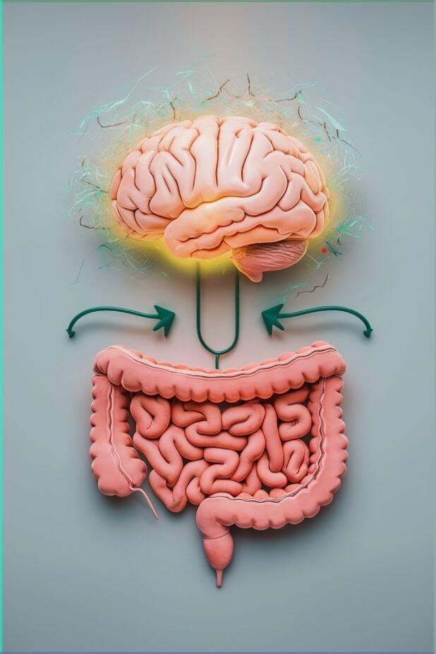

Understanding IBS (Irritable Bowel Syndrome)
Irritable Bowel Syndrome (IBS) is a common digestive disorder affecting the large intestine. It can cause cramping, bloating, gas, and changes in bowel habits such as diarrhea or constipation—or both.
🌱 What Causes IBS?
The exact cause is still unknown, but IBS may be linked to:
- Gut-brain axis imbalance
- Food intolerances or sensitivities
- Stress and anxiety
- Changes in gut bacteria
💡 Common Symptoms
- Abdominal pain or cramping
- Bloating and gas
- Diarrhea, constipation, or both
- Mucus in the stool
🌟 Managing IBS
While IBS has no cure, it can be managed through:
- Diet changes (low-FODMAP diet)
- Mindfulness and stress reduction
- Gentle movement and sleep hygiene
- Keeping a symptom and food journal
💖 You’re Not Alone
Millions live with IBS. Your journey toward healing is unique—and you deserve support, understanding, and hope.